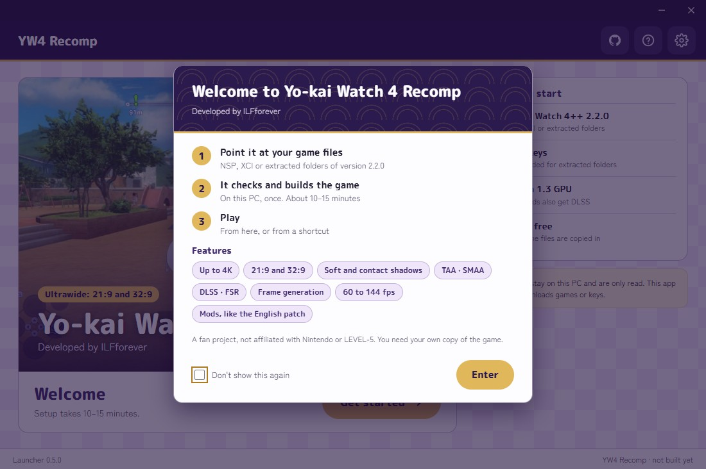

Follow the steps below to build your own copy of YW4Recomp:
- Point it at your game files. NSP, XCI or extracted folders of version 2.2.0.
- It checks, extracts and builds the game. locally, once: about 10 to 15 minutes.
- Play. From the launcher, or from a shortcut.
What you need before you start: the game and its 2.2.0 update, the keys for NSP and XCI files, a graphics card with Vulkan 1.3, and the free disk space. The launcher checks your files before beginning the build process.
- Needs
- Windows, x86-64
- Graphics
- Vulkan 1.3; NVIDIA RTX cards also get DLSS
- Your game
- Yo-kai Watch 4++ with the 2.2.0 update
